Jeden reellen Vektorraum  kann man zu einem komplexen Vektorraum 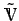 erweitern. Die Menge besteht aus allen Paaren (x,y) mit 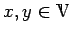. Die Operationen (Addition und Vielfaches mit einer komplexen Zahl 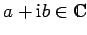) werden für diese Paare wie folgt festgelegt:
kann man zu einem komplexen Vektorraum 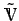 erweitern. Die Menge besteht aus allen Paaren (x,y) mit 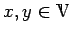. Die Operationen (Addition und Vielfaches mit einer komplexen Zahl 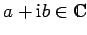) werden für diese Paare wie folgt festgelegt:
| 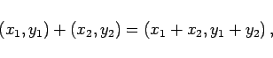 | (12.23a) |
| 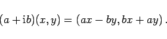 | (12.23b) |
Da insbesondere
| (x,y) | = | 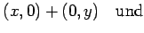 | |
| 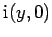 | = | 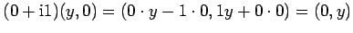 | (12.24) |
gilt, kann für das Paar (x,y) nun auch 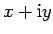 geschrieben werden. Die Menge ist damit ein komplexer Vektorraum, in dem die Menge  mit dem linearen Teilraum 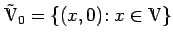 identifiziert wird, also x als (x,0) oder als 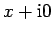 aufgefaßt wird.
mit dem linearen Teilraum 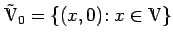 identifiziert wird, also x als (x,0) oder als 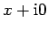 aufgefaßt wird.
Die beschriebene Prozedur nennt man Komplexifikation des Vektorraums  . Eine linear unabhängige Teilmenge in
. Eine linear unabhängige Teilmenge in  ist auch in linear unabhängig. Gleiches gilt für eine Basis in
ist auch in linear unabhängig. Gleiches gilt für eine Basis in  , woraus sich 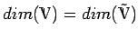 ergibt.
, woraus sich 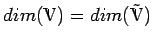 ergibt.